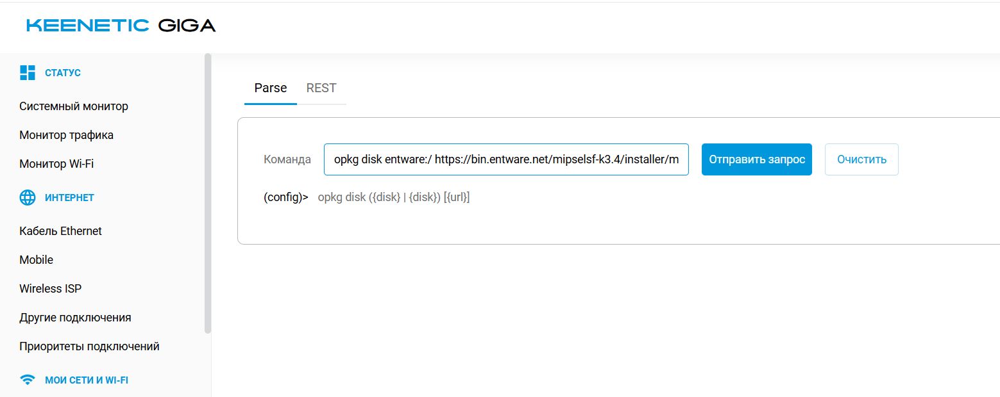
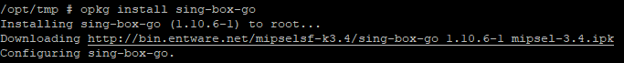
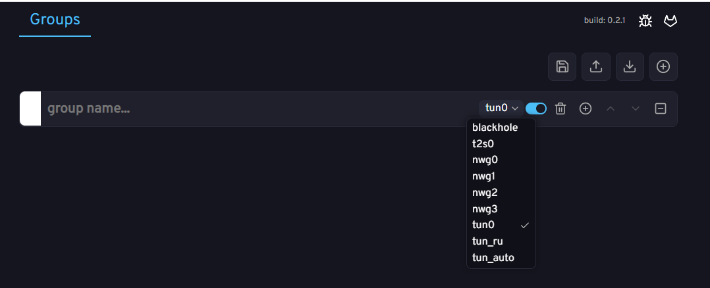

Протестировано на: Keenetic Giga KN-1011/KN-1012, Keenetic Viva KN-1913, Netis N6, Xiaomi MiRouter 3Gv1 (прошивка Keenetic).
Если уже настроено, пропустите этот пункт.
Перейдите в: «Сетевые правила» > «Интернет фильтры» > «Настройка DNS»
Добавьте серверы DNS-over-TLS:
cloudflare-dns.comcloudflare-dns.comdns.google.comdns.google.com
dns-proxy tls upstream 1.1.1.1 sni cloudflare-dns.com
dns-proxy tls upstream 1.0.0.1 sni cloudflare-dns.com
dns-proxy tls upstream 8.8.4.4 sni dns.google
dns-proxy tls upstream 8.8.8.8 sni dns.google
system configuration save
В настройках интернет-соединения включите «Игнорировать DNSv4 интернет-провайдера» (и DNSv6, если используется IPv6).

Отформатируйте USB накопитель в ext4. Используйте утилиты, такие как MiniTool Partition Wizard или Paragon Partition Manager, так как Windows не поддерживает ext4 стандартными средствами.

В общих настройках системы установите компонент «Поддержка открытых пакетов» (OPKG).


opkg disk, нажмите Tab, выберите флешку.

Opkg::Manager: /opt/etc/init.d/doinstall: [5/5] "Entware" installed!
install в корне флешки, загрузите туда инсталлятор.


Opkg::Manager: /opt/etc/init.d/doinstall: [5/5] "Entware" installed!
Используйте SSH-клиент (PuTTY, Kitty, Termius). Подключитесь к роутеру:
root, пароль: keenetic (смените пароль командой passwd).
Поочередно введите команды:
wget -qO- http://bin.magitrickle.dev/packages/add_repo.sh | sh
opkg update && opkg install magitrickle
/opt/etc/init.d/S99magitrickle start
Для обновления пакета:
opkg update && opkg install magitrickle
/opt/etc/init.d/S99magitrickle restart
Magitrickle запущен. Зайдите через браузер: адрес_роутера:8080

Установите Sing-Box:
opkg install sing-box-go

Используйте генераторы конфига:
Примечание: 100% работоспособность конфига не гарантируется из-за разных типов конфигураций.
Загрузите конфиг в /opt/etc/sing-box/ (замените стандартный). Рекомендуется использовать WinSCP (адрес роутера, порт 222, логин root, пароль keenetic).


outbounds, скопируйте первый Outbound (ваш сервер)./opt/etc/sing-box/config.json.
{
"log": {
"level": "info"
},
"inbounds": [
{
"type": "tun",
"tag": "tun-in",
"interface_name": "singtun0",
"address": [
"172.19.0.1/32"
],
"stack": "gvisor"
}
],
"outbounds": [
{
"type": "selector",
"tag": "select",
"outbounds": [
"auto",
"proxy"
],
"default": "auto",
"interrupt_exist_connections": false
},
{
"type": "urltest",
"tag": "auto",
"outbounds": [
"proxy"
],
"url": "https://www.gstatic.com/generate_204",
"interval": "3m",
"tolerance": 50,
"idle_timeout": "30m",
"interrupt_exist_connections": false
},
// СЮДА ВСТАВЛЯЕШЬ СВОЙ OUTBOUND!!!
{
"type": "block",
"tag": "block"
}
],
"route": {
"rules": [
{
"ip_version": 6,
"outbound": "block"
}
],
"final": "select"
},
"experimental": {
"clash_api": {
"external_controller": "[::]:9090",
"external_ui": "dashboard"
}
}
}
/opt/etc/init.d/S99sing-box startПроверьте конфиг:
sing-box -c /opt/etc/sing-box/config.json check

Запустите Sing-Box:
/opt/etc/init.d/S99sing-box start

Зайдите через браузер: адрес_роутера:9090
Во вкладке Proxies выберите подключение из конфига для интерфейса tun0.

Перейдите в интерфейс Magitrickle: 192.168.1.1:8080
tun0 или singtun0.
2ip.ru, сохраните.

Можно использовать любые интерфейсы и создавать группы с разными интерфейсами.
Список доменов для сервисов: iplist.opencck.org (формат «Text», тип «Домены», только wildcard).

Для массового импорта доменов используйте редакторы:
В интерфейсе Magitrickle доступны следующие типы правил:
example.com.
* и ?. Например, *example.com.
sub.example.com.
dlclark/regexp2. Например, ^[a-z]*example\.com$.
Поддержать автора можно по ссылке.